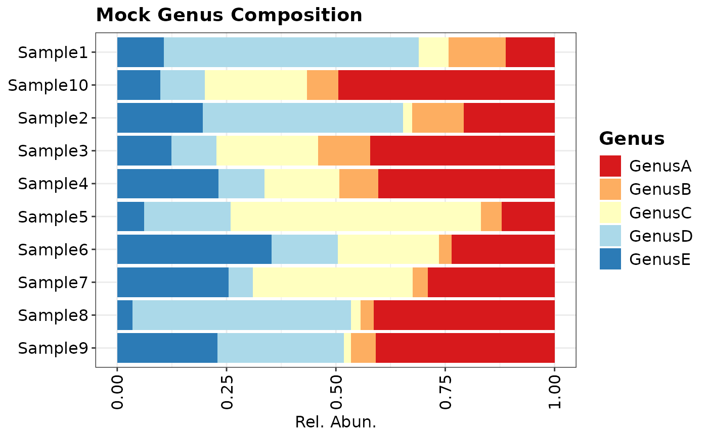
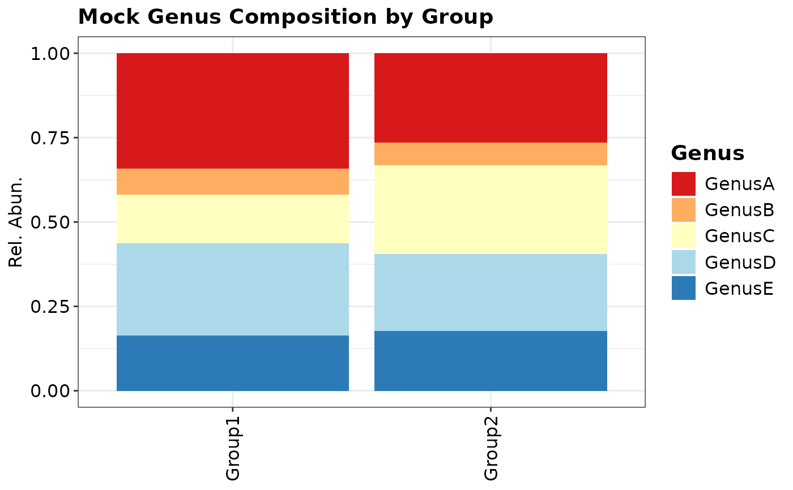

Creates a stacked barchart of features. It is possible to both show barcharts for each sample or group them by a categorical variable.
The function is compatible with the class omics method composition().
Arguments
- data
A data.frame or data.table.
- palette
An object with names and hexcode or color names, see colormap.
- feature_rank
A character variable of the feature column.
- title_name
A character to set the
ggtitleof the ggplot, (Default: NULL).- group_by
A character variable to aggregate the stacked bars by group (Default: NULL).
Value
A ggplot2 object to be further modified
Examples
library("ggplot2")
# Create mock_data as data.frame (data.table is also supported)
mock_data <- data.frame(
SAMPLE_ID = rep(paste0("Sample", 1:10), each = 5),
Genus = rep(c("GenusA","GenusB","GenusC","GenusD","GenusE"), times = 10),
value = c(
0.1119, 0.1303, 0.0680, 0.5833, 0.1065, # Sample1
0.2080, 0.1179, 0.0211, 0.4578, 0.1951, # Sample2
0.4219, 0.1189, 0.2320, 0.1037, 0.1235, # Sample3
0.4026, 0.0898, 0.1703, 0.1063, 0.2309, # Sample4
0.1211, 0.0478, 0.5721, 0.1973, 0.0618, # Sample5
0.2355, 0.0293, 0.2304, 0.1520, 0.3528, # Sample6
0.2904, 0.0347, 0.3651, 0.0555, 0.2544, # Sample7
0.4138, 0.0299, 0.0223, 0.4996, 0.0345, # Sample8
0.4088, 0.0573, 0.0155, 0.2888, 0.2296, # Sample9
0.4941, 0.0722, 0.2331, 0.1023, 0.0983 # Sample10
),
Group = rep(c("Group1","Group2","Group1",
"Group1","Group2","Group2",
"Group1","Group1","Group1","Group2"),
each = 5)
)
# Create a colormap
mock_palette <- c(
GenusA = "#1f77b4", # blue
GenusB = "#ff7f0e", # orange
GenusC = "#2ca02c", # green
GenusD = "#d62728", # red
GenusE = "#9467bd" # purple
)
# Optionally: Use OmicFlow::colormap()
mock_palette <- colormap(
data = mock_data,
col_name = "Genus",
Brewer.palID = "RdYlBu"
)
composition_plot(
data = mock_data,
palette = mock_palette,
feature_rank = "Genus",
title_name = "Mock Genus Composition"
)

composition_plot(
data = mock_data,
palette = mock_palette,
feature_rank = "Genus",
title_name = "Mock Genus Composition by Group",
group_by = "Group"
)
